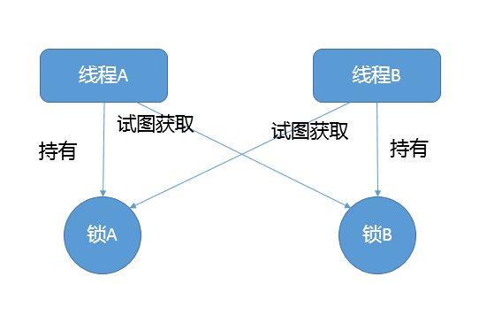
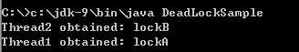
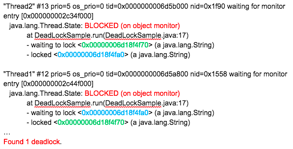
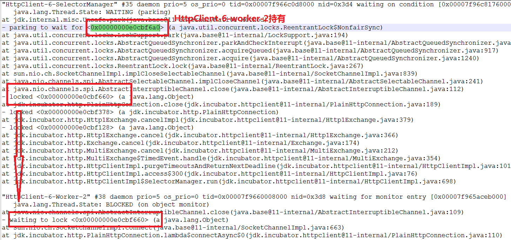
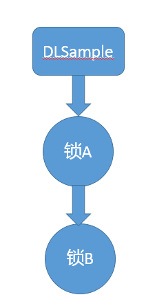
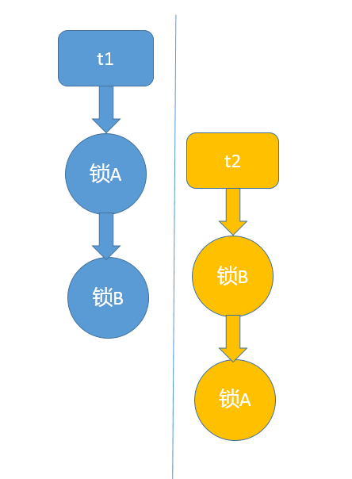
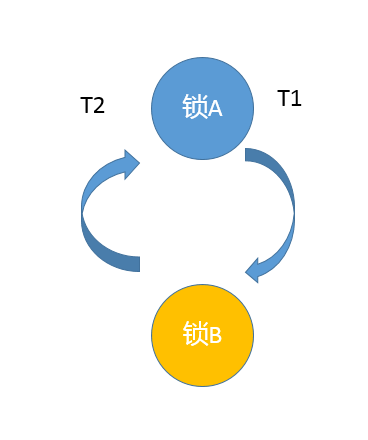

- 00 开篇词 以面试题为切入点，有效提升你的Java内功.md.html
- 01 谈谈你对Java平台的理解？.md.html
- 02 Exception和Error有什么区别？.md.html
- 03 谈谈final、finally、 finalize有什么不同？.md.html
- 04 强引用、软引用、弱引用、幻象引用有什么区别？.md.html
- 05 String、StringBuffer、StringBuilder有什么区别？.md.html
- 06 动态代理是基于什么原理？.md.html
- 07 int和Integer有什么区别？.md.html
- 08 对比Vector、ArrayList、LinkedList有何区别？.md.html
- 09 对比Hashtable、HashMap、TreeMap有什么不同？.md.html
- 10 如何保证集合是线程安全的_ ConcurrentHashMap如何实现高效地线程安全？.md.html
- 11 Java提供了哪些IO方式？ NIO如何实现多路复用？.md.html
- 12 Java有几种文件拷贝方式？哪一种最高效？.md.html
- 13 谈谈接口和抽象类有什么区别？.md.html
- 14 谈谈你知道的设计模式？.md.html
- 15 synchronized和ReentrantLock有什么区别呢？.md.html
- 16 synchronized底层如何实现？什么是锁的升级、降级？.md.html
- 17 一个线程两次调用start()方法会出现什么情况？.md.html
- 18 什么情况下Java程序会产生死锁？如何定位、修复？.md.html
- 19 Java并发包提供了哪些并发工具类？.md.html
- 20 并发包中的ConcurrentLinkedQueue和LinkedBlockingQueue有什么区别？.md.html
- 21 Java并发类库提供的线程池有哪几种？ 分别有什么特点？.md.html
- 22 AtomicInteger底层实现原理是什么？如何在自己的产品代码中应用CAS操作？.md.html
- 23 请介绍类加载过程，什么是双亲委派模型？.md.html
- 24 有哪些方法可以在运行时动态生成一个Java类？.md.html
- 25 谈谈JVM内存区域的划分，哪些区域可能发生OutOfMemoryError_.md.html
- 26 如何监控和诊断JVM堆内和堆外内存使用？.md.html
- 27 Java常见的垃圾收集器有哪些？.md.html
- 28 谈谈你的GC调优思路_.md.html
- 29 Java内存模型中的happen-before是什么？.md.html
- 30 Java程序运行在Docker等容器环境有哪些新问题？.md.html
- 31 你了解Java应用开发中的注入攻击吗？.md.html
- 32 如何写出安全的Java代码？.md.html
- 33 后台服务出现明显“变慢”，谈谈你的诊断思路？.md.html
- 34 有人说“Lambda能让Java程序慢30倍”，你怎么看？.md.html
- 35 JVM优化Java代码时都做了什么？.md.html
- 36 谈谈MySQL支持的事务隔离级别，以及悲观锁和乐观锁的原理和应用场景？.md.html
- 37 谈谈Spring Bean的生命周期和作用域？.md.html
- 38 对比Java标准NIO类库，你知道Netty是如何实现更高性能的吗？.md.html
- 39 谈谈常用的分布式ID的设计方案？Snowflake是否受冬令时切换影响？.md.html
- 周末福利 谈谈我对Java学习和面试的看法.md.html
- 结束语 技术没有终点.md.html
- 捐赠
18 什么情况下Java程序会产生死锁？如何定位、修复？
今天，我会介绍一些日常开发中类似线程死锁等问题的排查经验，并选择一两个我自己修复过或者诊断过的核心类库死锁问题作为例子，希望不仅能在面试时，包括在日常工作中也能对你有所帮助。
今天我要问你的问题是，什么情况下Java程序会产生死锁？如何定位、修复？
典型回答
死锁是一种特定的程序状态，在实体之间，由于循环依赖导致彼此一直处于等待之中，没有任何个体可以继续前进。死锁不仅仅是在线程之间会发生，存在资源独占的进程之间同样也可能出现死锁。通常来说，我们大多是聚焦在多线程场景中的死锁，指两个或多个线程之间，由于互相持有对方需要的锁，而永久处于阻塞的状态。
你可以利用下面的示例图理解基本的死锁问题：

定位死锁最常见的方式就是利用jstack等工具获取线程栈，然后定位互相之间的依赖关系，进而找到死锁。如果是比较明显的死锁，往往jstack等就能直接定位，类似JConsole甚至可以在图形界面进行有限的死锁检测。
如果程序运行时发生了死锁，绝大多数情况下都是无法在线解决的，只能重启、修正程序本身问题。所以，代码开发阶段互相审查，或者利用工具进行预防性排查，往往也是很重要的。
考点分析
今天的问题偏向于实用场景，大部分死锁本身并不难定位，掌握基本思路和工具使用，理解线程相关的基本概念，比如各种线程状态和同步、锁、Latch等并发工具，就已经足够解决大多数问题了。
针对死锁，面试官可以深入考察：
抛开字面上的概念，让面试者写一个可能死锁的程序，顺便也考察下基本的线程编程。
诊断死锁有哪些工具，如果是分布式环境，可能更关心能否用API实现吗？
后期诊断死锁还是挺痛苦的，经常加班，如何在编程中尽量避免一些典型场景的死锁，有其他工具辅助吗？
知识扩展
在分析开始之前，先以一个基本的死锁程序为例，我在这里只用了两个嵌套的synchronized去获取锁，具体如下：
public class DeadLockSample extends Thread {
private String first;
private String second;
public DeadLockSample(String name, String first, String second) {
super(name);
this.first = first;
this.second = second;
}
public void run() {
synchronized (first) {
System.out.println(this.getName() + " obtained: " + first);
try {
Thread.sleep(1000L);
synchronized (second) {
System.out.println(this.getName() + " obtained: " + second);
}
} catch (InterruptedException e) {
// Do nothing
}
}
}
public static void main(String[] args) throws InterruptedException {
String lockA = "lockA";
String lockB = "lockB";
DeadLockSample t1 = new DeadLockSample("Thread1", lockA, lockB);
DeadLockSample t2 = new DeadLockSample("Thread2", lockB, lockA);
t1.start();
t2.start();
t1.join();
t2.join();
}
}
这个程序编译执行后，几乎每次都可以重现死锁，请看下面截取的输出。另外，这里有个比较有意思的地方，为什么我先调用Thread1的start，但是Thread2却先打印出来了呢？这就是因为线程调度依赖于（操作系统）调度器，虽然你可以通过优先级之类进行影响，但是具体情况是不确定的。

下面来模拟问题定位，我就选取最常见的jstack，其他一些类似JConsole等图形化的工具，请自行查找。
首先，可以使用jps或者系统的ps命令、任务管理器等工具，确定进程ID。
其次，调用jstack获取线程栈：
${JAVA_HOME}\bin\jstack your_pid
然后，分析得到的输出，具体片段如下：

最后，结合代码分析线程栈信息。上面这个输出非常明显，找到处于BLOCKED状态的线程，按照试图获取（waiting）的锁ID（请看我标记为相同颜色的数字）查找，很快就定位问题。 jstack本身也会把类似的简单死锁抽取出来，直接打印出来。
在实际应用中，类死锁情况未必有如此清晰的输出，但是总体上可以理解为：
区分线程状态 -> 查看等待目标 -> 对比Monitor等持有状态
所以，理解线程基本状态和并发相关元素是定位问题的关键，然后配合程序调用栈结构，基本就可以定位到具体的问题代码。
如果我们是开发自己的管理工具，需要用更加程序化的方式扫描服务进程、定位死锁，可以考虑使用Java提供的标准管理API，ThreadMXBean，其直接就提供了findDeadlockedThreads()方法用于定位。为方便说明，我修改了DeadLockSample，请看下面的代码片段。
public static void main(String[] args) throws InterruptedException {
ThreadMXBean mbean = ManagementFactory.getThreadMXBean();
Runnable dlCheck = new Runnable() {
@Override
public void run() {
long[] threadIds = mbean.findDeadlockedThreads();
if (threadIds != null) {
ThreadInfo[] threadInfos = mbean.getThreadInfo(threadIds);
System.out.println("Detected deadlock threads:");
for (ThreadInfo threadInfo : threadInfos) {
System.out.println(threadInfo.getThreadName());
}
}
}
};
ScheduledExecutorService scheduler =Executors.newScheduledThreadPool(1);
// 稍等5秒，然后每10秒进行一次死锁扫描
scheduler.scheduleAtFixedRate(dlCheck, 5L, 10L, TimeUnit.SECONDS);
// 死锁样例代码…
}
重新编译执行，你就能看到死锁被定位到的输出。在实际应用中，就可以据此收集进一步的信息，然后进行预警等后续处理。但是要注意的是，对线程进行快照本身是一个相对重量级的操作，还是要慎重选择频度和时机。
如何在编程中尽量预防死锁呢？
首先，我们来总结一下前面例子中死锁的产生包含哪些基本元素。基本上死锁的发生是因为：
互斥条件，类似Java中Monitor都是独占的，要么是我用，要么是你用。
互斥条件是长期持有的，在使用结束之前，自己不会释放，也不能被其他线程抢占。
循环依赖关系，两个或者多个个体之间出现了锁的链条环。
所以，我们可以据此分析可能的避免死锁的思路和方法。
第一种方法
如果可能的话，尽量避免使用多个锁，并且只有需要时才持有锁。否则，即使是非常精通并发编程的工程师，也难免会掉进坑里，嵌套的synchronized或者lock非常容易出问题。
我举个例子， Java NIO的实现代码向来以锁多著称，一个原因是，其本身模型就非常复杂，某种程度上是不得不如此；另外是在设计时，考虑到既要支持阻塞模式，又要支持非阻塞模式。直接结果就是，一些基本操作如connect，需要操作三个锁以上，在最近的一个JDK改进中，就发生了死锁现象。
我将其简化为下面的伪代码，问题是暴露在HTTP/2客户端中，这是个非常现代的反应式风格的API，非常推荐学习使用。
/// Thread HttpClient-6-SelectorManager:
readLock.lock();
writeLock.lock();
// 持有readLock/writeLock，调用close（）需要获得closeLock
close();
// Thread HttpClient-6-Worker-2 持有closeLock
implCloseSelectableChannel (); //想获得readLock
在close发生时， HttpClient-6-SelectorManager线程持有readLock/writeLock，试图获得closeLock；与此同时，另一个HttpClient-6-Worker-2线程，持有closeLock，试图获得readLock，这就不可避免地进入了死锁。
这里比较难懂的地方在于，closeLock的持有状态（就是我标记为绿色的部分）并没有在线程栈中显示出来，请参考我在下图中标记的部分。
-
更加具体来说，请查看SocketChannelImpl的663行，对比implCloseSelectableChannel()方法实现和AbstractInterruptibleChannel.close()在109行的代码，这里就不展示代码了。
所以，从程序设计的角度反思，如果我们赋予一段程序太多的职责，出现“既要…又要…”的情况时，可能就需要我们审视下设计思路或目的是否合理了。对于类库，因为其基础、共享的定位，比应用开发往往更加令人苦恼，需要仔细斟酌之间的平衡。
第二种方法
如果必须使用多个锁，尽量设计好锁的获取顺序，这个说起来简单，做起来可不容易，你可以参看著名的银行家算法。
一般的情况，我建议可以采取些简单的辅助手段，比如：
- 将对象（方法）和锁之间的关系，用图形化的方式表示分别抽取出来，以今天最初讲的死锁为例，因为是调用了同一个线程所以更加简单。

- 然后根据对象之间组合、调用的关系对比和组合，考虑可能调用时序。

- 按照可能时序合并，发现可能死锁的场景。
-
第三种方法
使用带超时的方法，为程序带来更多可控性。
类似Object.wait(…)或者CountDownLatch.await(…)，都支持所谓的timed_wait，我们完全可以就不假定该锁一定会获得，指定超时时间，并为无法得到锁时准备退出逻辑。
并发Lock实现，如ReentrantLock还支持非阻塞式的获取锁操作tryLock()，这是一个插队行为（barging），并不在乎等待的公平性，如果执行时对象恰好没有被独占，则直接获取锁。有时，我们希望条件允许就尝试插队，不然就按照现有公平性规则等待，一般采用下面的方法：
if (lock.tryLock() || lock.tryLock(timeout, unit)) {
// ...
}
第四种方法
业界也有一些其他方面的尝试，比如通过静态代码分析（如FindBugs）去查找固定的模式，进而定位可能的死锁或者竞争情况。实践证明这种方法也有一定作用，请参考相关文档。
除了典型应用中的死锁场景，其实还有一些更令人头疼的死锁，比如类加载过程发生的死锁，尤其是在框架大量使用自定义类加载时，因为往往不是在应用本身的代码库中，jstack等工具也不见得能够显示全部锁信息，所以处理起来比较棘手。对此，Java有官方文档进行了详细解释，并针对特定情况提供了相应JVM参数和基本原则。
今天，我从样例程序出发，介绍了死锁产生原因，并帮你熟悉了排查死锁基本工具的使用和典型思路，最后结合实例介绍了实际场景中的死锁分析方法与预防措施，希望对你有所帮助。
一课一练
关于今天我们讨论的题目你做到心中有数了吗？今天的思考题是，有时候并不是阻塞导致的死锁，只是某个线程进入了死循环，导致其他线程一直等待，这种问题如何诊断呢？
请你在留言区写写你对这个问题的思考，我会选出经过认真思考的留言，送给你一份学习奖励礼券，欢迎你与我一起讨论。
你的朋友是不是也在准备面试呢？你可以“请朋友读”，把今天的题目分享给好友，或许你能帮到他。
© 2019 - 2023 Liangliang Lee. Powered by gin and hexo-theme-book.